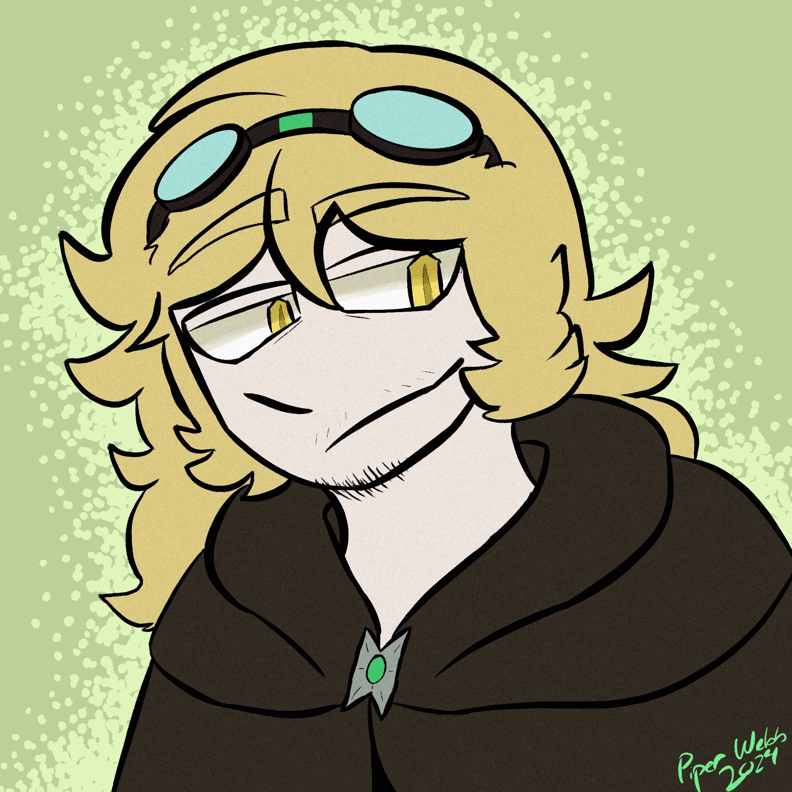
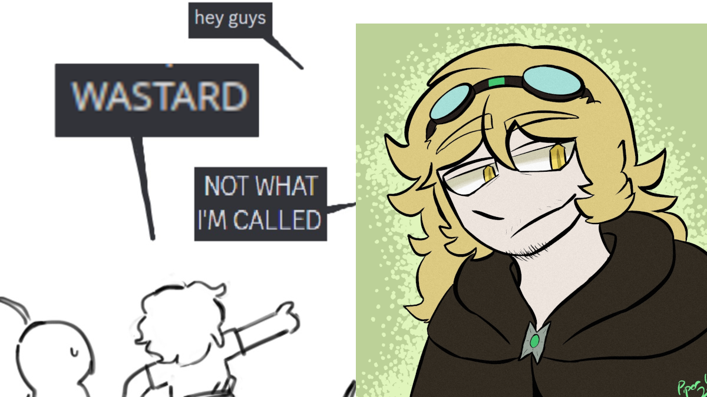

📖 - William Dylan Webb - 📖
- Age: Late 20s?
- Gender: Man
- Sexuality: Gay
- Species: Dragonblood
- Role: Craftsman
📖 Bio 📖
I am Will, I am and have been many things over the years.
Known for being incredibly difficult to piss off and apparently for being quite intimidating for reasons that are beyond me.
I am also a subsystem, comprised of me, and a guy of the name Dylan who is still sort of me. Plus a bunch of other weird stuff that I can't be bothered to write about on a public page.
📖
Other parts of the library subsystem that have pages can be found here:
📗 Dylan (he/him)
